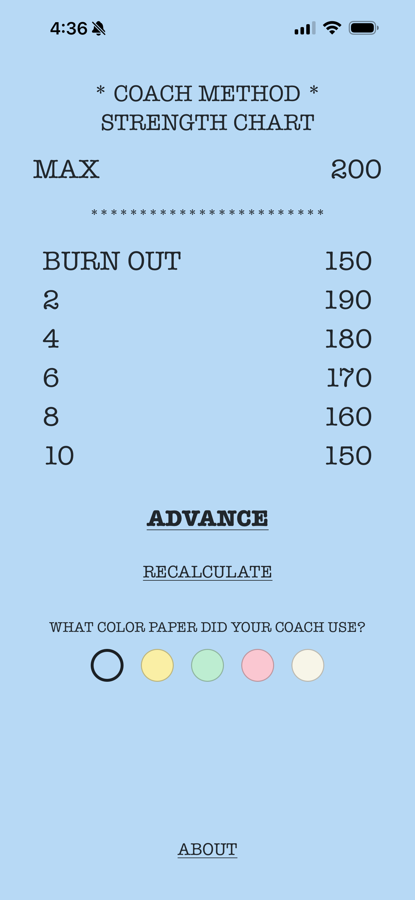
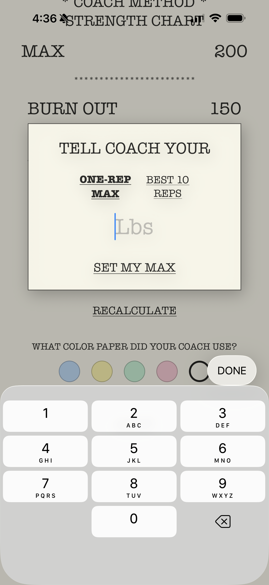
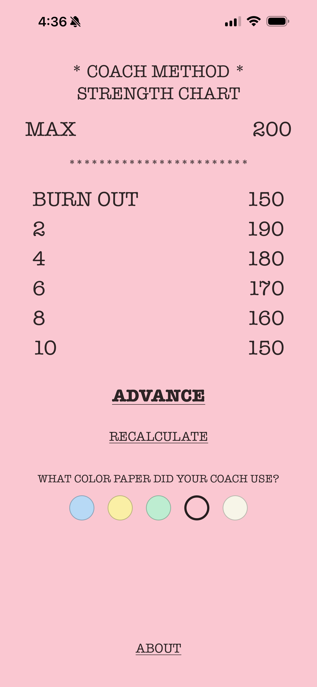
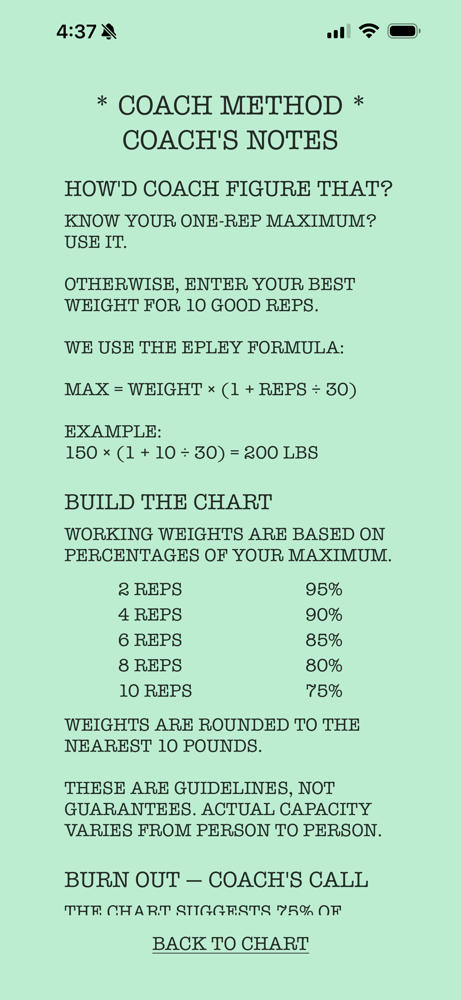

Your Strength Chart
See your training weights laid out in a familiar chart format, ready when you are.
Remember those strength training charts your coach kept in the weight room?
Coach Method brings that familiar approach to your iPhone. Calculate your training weights, work through your chart, and keep your focus where it belongs: on your workout.

The classic strength chart, brought to life on your iPhone.




No accounts. No subscriptions. No complicated workout tracking. Just a straightforward strength chart that does what you need it to do.
See your training weights laid out in a familiar chart format, ready when you are.
Estimate your maximum lift from a familiar working weight and rep count.
Move your chart forward in ten-pound increments as your strength progresses.
Choose the chart color you remember from the weight room.
Coach Method was inspired by the paper strength charts that hung in school weight rooms and training facilities.
Those charts were simple, practical tools. They didn't demand attention or try to manage every part of your workout.
Coach Method carries that philosophy forward: a familiar tool, thoughtfully adapted for today.
Have a question, found an issue, or want to share feedback about Coach Method? We'd like to hear from you.